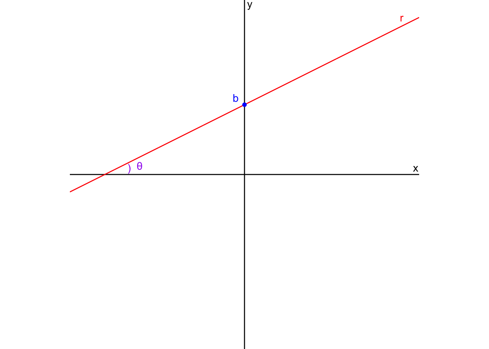

9 Derivadas
Anotações das aulas
Definição
Sejam \(y = f(x)\) uma função e \(p\) um ponto do seu domínio, o limite …
\[\lim_{h \to 0} \frac{f(p+h) - f(p)}{h}\]
… , quando existe e é finito denomina-se derivada de \(f\) em \(p\) e é idenficado por \(f'(p)\).
Obs: se \(f\) for derivável em \(p\), então a reta da equação \(y = f'(p)(x-p) + f(p)\) é a reta tangente ao gráfico de \(f\) no ponto \((p, f(p))\).
Reta tangente [ORGANIZAR]
Várias anotações que fui fazendo na aula em lugares diferentes, organizar isso!
Lembrando:
- Reta secante: passa por 2 pontos da circunferência
- Reta tangente: passa por apenas 1 ponto da circunferência
Reta tangente em um gráfico em um ponto \(p\):
- Só depende do ponto \(p\) e perto do ponto \(p\).
- é um conceito local, depende do \(\lim\).
A reta tangente é o limite das retas secantes.
- Coeficiente angular da reta tangente ao gráfico da função no ponto \((p, f(p))\).
O meu desenho ficou muito ruim! Continuar depois.
Lista de derivadas importantes
\(f(x) = sen x \implies f'(x) = \cos x\)
\(f(x) = \cos x \implies f'(x) = -\sin x\)
\(f(x) = \tan x \implies f'(x) = \sec^2 x\)
P24
Seja \(r\) uma reta no plano \(\mathbb{R}^2\).
1.
O que é o coeficiente angular \(m\) de \(r\)?
Vamos desenhar uma reta \(y = mx + b\).
Como chegamos em \(m = \tan x\)?
Primeiro, vamos pensar no círculo unitário e a reta \(f(x) = mx + b\).
Vamos pensar na semelhança de triângulos! O triângulo menor é o que está dentro do círculo unitário e o triângulo maior é o que está fora do círculo unitário.

O raio do círculo unitário é 1.
\[ \frac{\tan \theta}{1} = \frac{b}{a} \]
No gráfico acima, \(b = \sin \theta\) e \(a = \cos \theta\).
\[ \tan \theta = \frac{sen \theta}{cos \theta} \]
2.
O que acontece quando \(m = 0\)? \(m>0\)? \(m<0\)?
Quando \(m = 0\), a reta é horizontal (paralela ao eixo \(x\)).
Quando \(m > 0\), a reta é crescente.
Quando \(m < 0\), a reta é decrescente.

P25
Escreva a equação da reta \(r\) passando pelo ponto \((x_0, y_0)\) com coeficiente angular \(m\).
Tentei reproduzir os desenhos, mas as minhas anotações não estavam muito boas.
Para escrever a equação de uma reta, precisamos de 2 pontos. No gráfico abaixo, temos os pontos \((x_0, y_0)\) e \((x, y)\).
Podemos considerar o triângulo formado pelos pontos indicados. O triângulo é semelhante ao “maior” triângulo (o que é formado com o ponto onde a reta cruza o eixo \(x\)).

Vamos pensar no triângulo “menor”:
- A tangente do ângulo \(\theta\) é igual ao cateto oposto dividido pelo cateto adjacente.
- O cateto oposto é \(y - y_0\) e o cateto adjacente é \(x - x_0\).
Temos que:
\[ \tan \theta = \frac{y - y_0}{x - x_0} = m \] O coeficiente angular \(m\) representa a tangente do ângulo \(\theta\) que a reta faz com o eixo \(x\).
P26. Seja \(f(x) = x^2\). Calcule:
1. \(f'(2)\)
Calculando a derivada para um ponto específico:
\[ \lim_{x \to 2} \frac{f(x) - f(2)}{x - 2} = \lim_{x \to 2} \frac{x^2 - 4}{x - 2} \]
Agora podemos resolver o limite! Fatorar.
\[ = \lim_{x \to 2} \frac{\cancel{(x-2)}(x+2)}{\cancel{x - 2}} \] Podemos utilizar a substituição direta:
\[ = \lim_{x \to 2} x+2 = 4 \]
2. \(f'(p), \forall \space p \in \mathbb{R}\)
Calculando a derivada para um ponto genérico \(p\):
\[ \lim_{x \to p} \frac{f(x) - f(p)}{x - p} = \lim_{x \to p} \frac{x^2 - p^2}{x - p} \] Fatorar o limite:
\[ = \lim_{x \to p} \frac{\cancel{(x-p)}(x+p)}{\cancel{(x - p)}} \] \[ = \lim_{x \to p} \cancelto{p}{x} + p = 2p \]
3. \(f'(x), \forall \space x \in \mathbb{R}\)
Considerando o exercício anterior, podemos generalizar o resultado (em vez de \(p\), vamos usar \(x\)). Assim, encontramos a função derivada, que nos dá a taxa de variação de \(f(x) = x^2\) em qualquer ponto:
\[ f(x) = x^2 \]
\[ f'(x) = 2x \]
P27
Escreva a equação da reta tangente ao gráfico de \(f(x) = \sin x\) no ponto \((0,0)\).
\[ f'(0) = \lim_{x \to 0} \frac{f(x) - f(0)}{x - 0} = \lim_{x \to 0} \frac{\sin x - 0}{x - 0} \] Esse é o limite fundamental:
\[ = \lim_{x \to 0} \frac{\sin x}{x} = 1 \] A inclinação da reta tangente da função \(\sin x\), no ponto \((0, 0)\), é 1. Veja o gráfico abaixo:

P28. Calcule \(f'(x)\) onde:
- Dica: veja primeiro o item 4.
1. \(f(x) = x^3, \forall \space x \in \mathbb{R}\)
\[ f'(x) = 3 \cdot x^{2} \]
2. \(f(x) = x, \forall \space x \in \mathbb{R}\)
\[ f'(x) = 1 \cdot x^{1-1} = 1 \cdot x^{0} = 1 \]
Outra forma:
\[ f'(x) = \lim_{x \to p} \frac{f(x) - f(p)}{x - p} \] \[ = \lim_{x \to p} \frac{x - p}{x - p} = \lim_{x \to p} \space 1 = 1 \]
3. \(f(x) = k, \forall \space x \in \mathbb{R}\), onde \(k \in \mathbb{R}\)
Pensar no gráfico de uma função constante: é uma linha reta, sem inclinação. Então a derivada é zero.
\[ f'(p) = \lim_{x \to p} \frac{f(x) - f(p)}{x - p} \] \[ = \lim_{x \to p} \frac{k - k}{x - p} = \lim_{x \to p} \frac{0}{x - p} = \lim_{x \to p} 0 = 0 \]
4. \(f(x) = x ^ n, \forall \space x \in \mathbb{R}\), onde \(n \in \mathbb{N}^*\)
\[ f'(x) = n \cdot x^{n-1} \]
\[ f'(p) = \lim_{x \to p} \frac{f(x) - f(p)}{x - p} = \lim_{x \to p} \frac{x^n - p^n}{x - p} \]
Lembremos:
\[ a^n - b^n = (a - b)(a^{n-1} + a^{n-2}b + ... + ab^{n-2} + b^{n-1}) \]
\[ = \lim_{x \to p} \frac{\cancel{(x - p)}(x^{n-1} + x^{n-2}p + ... + xp^{n-2} + p^{n-1})}{\cancel{(x - p)}} \]
\[ = \lim_{x \to p} (\cancelto{p ^{n-1}}{x^{n-1}} + \cancelto{p ^{n-1}}{x^{n-2}p} + ... + \cancelto{p ^{n-1}}{xp^{n-2}} + \cancelto{p ^{n-1}}{p^{n-1}}) \]
\[ = \lim_{x \to p} n \cdot p^{n-1} \]
5. \(f(x) = \sin x, \forall \space x \in \mathbb{R}\)
Queremos calcular a derivada de \(f(x) = \sin x\) em um ponto \(p\).
\[ f'(p) = \lim_{x \to p} \frac{f(x) - f(p)}{x - p} \]
\[ = \lim_{x \to p} \frac{\sin x - \sin p}{x - p} \]
Usando a fórmula de diferença de senos:
Importante
Não entendi esse passo, pedir ajuda pro Julio
\[ \sin x - \sin p = 2 \cdot \cos\left(\frac{x + p}{2}\right) \cdot \sin\left(\frac{x - p}{2}\right) \]
Substituindo no limite:
\[ = \lim_{x \to p} \frac{2 \cdot \cos\left(\frac{x + p}{2}\right) \cdot \sin\left(\frac{x - p}{2}\right)}{x - p} \] Como temos a função seno, podemos tentar encontrar o limite fundamental. Vamos dividir em cima e em baixo por 2, para facilitar a utilização do limite fundamental:
\[ = \lim_{x \to p} \cos\left(\frac{x + p}{2}\right) \cdot \frac{\sin\left(\frac{x - p}{2}\right)}{\frac{x - p}{2}} \]
Vamos separar em duas partes, considerando que o limite é o produto de dois limites.
1. Limite fundamental
Podemos fazer uma mudança de variável:
\[ u = \frac{x - p}{2} \]
Quando \(x \to p\), temos que \(u \to 0\): \(\frac{p - p}{2} = 0\).
Reescrevendo o limite, em função de \(u\):
\[ = \lim_{u \to 0} \frac{\sin u}{u} = 1 \]
2. Limite da função cosseno
\[ = \lim_{x \to p} \cos\left(\frac{x + p}{2}\right) = \lim_{x \to p} \cos\left(\frac{\cancelto{p}{x} + p}{2}\right) = \cos \frac{2p}{2} = \cos p \]
Juntando tudo:
\[ = \lim_{x \to p} \cos\left(\frac{x + p}{2}\right) \cdot \frac{\sin\left(\frac{x - p}{2}\right)}{\frac{x - p}{2}} = 1 \cdot \cos p = \cos p \]
Portanto, a derivada de \(f(x) = \sin x\) é:
\[ f'(x) = \cos x \]
P29
Calcule, caso exista, \(f'(0)\) onde \(f(x) = |x|,\forall \space x \in \mathbb{R}\).
\[ f'(0) = \lim_{x \to 0} \frac{f(x) - f(0)}{x - 0} = \lim_{x \to 0} \frac{|x| - 0}{x - 0} \]
Vamos pensar nos limites laterais!
\[ \lim_{x \to 0^-} \frac{|x|}{x} = \lim_{x \to 0^-} \frac{-x}{x} = -1 \]
\[ \lim_{x \to 0^+} \frac{|x|}{x} = \lim_{x \to 0^+} \frac{x}{x} = 1 \] Os limites laterais existem e são diferentes. Portanto, o limite não existe.
\[ \nexists \lim_{x \to 0} \frac{|x| - 0}{x - 0} \]
Se o limite não existe, a função não é derivável em \(x = 0\).
A função \(f(x) = |x|\) não é derivável em \(x = 0\) porque não possui reta tangente bem definida nesse ponto — o gráfico apresenta um “bico”, indicando uma mudança brusca na direção.
Lembrando do gráfico da função \(f(x) = |x|\): ela forma um “bico”!